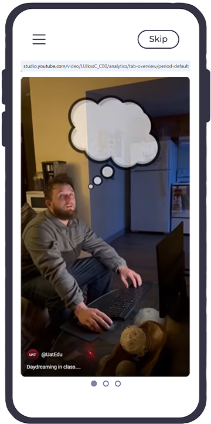
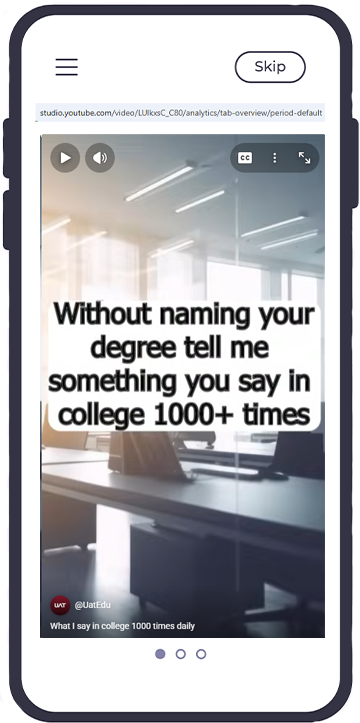
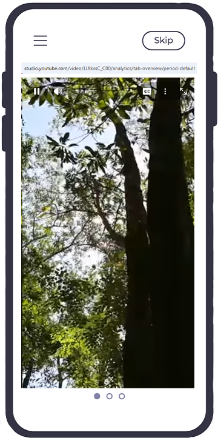
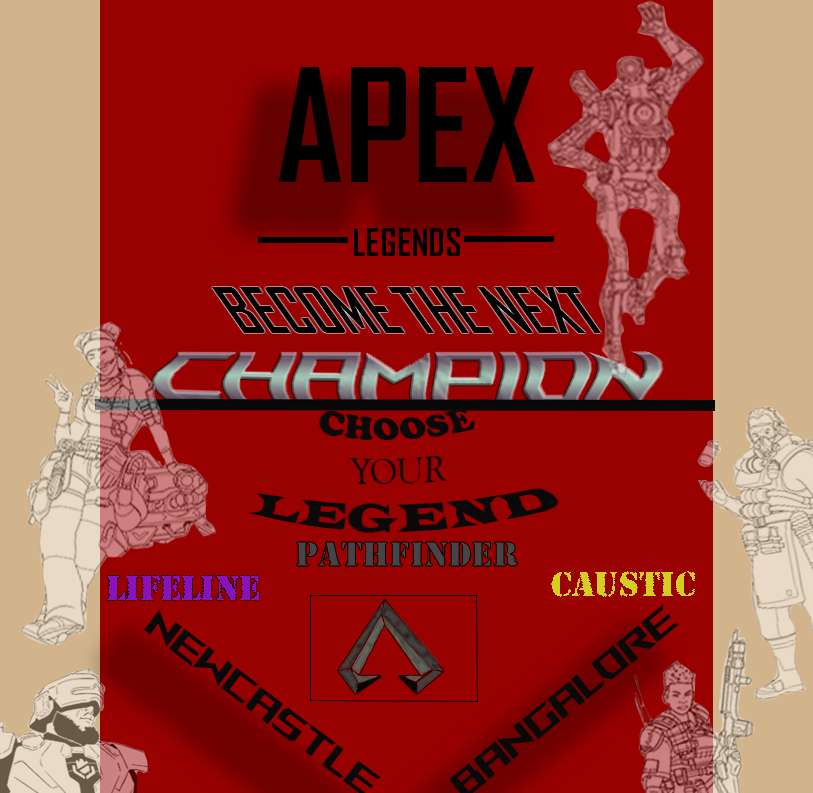
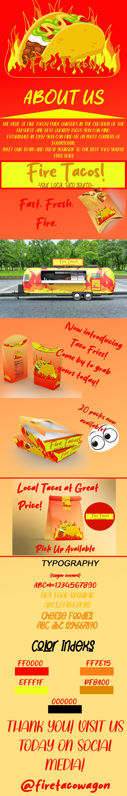
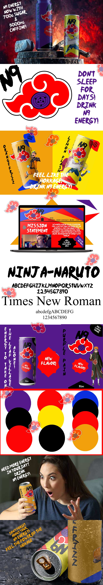
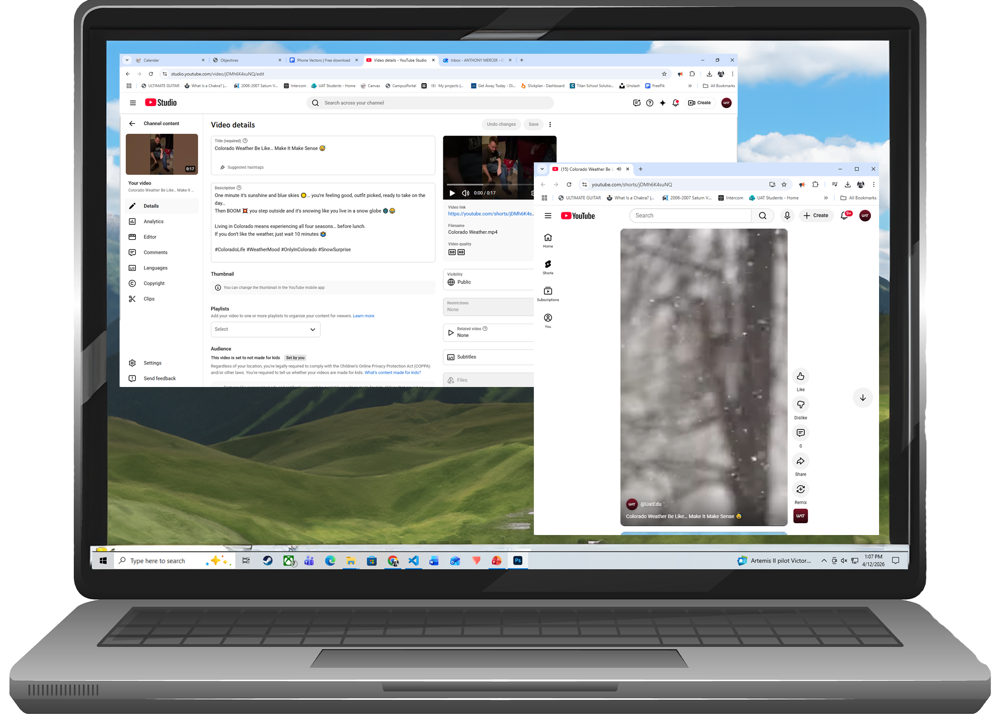
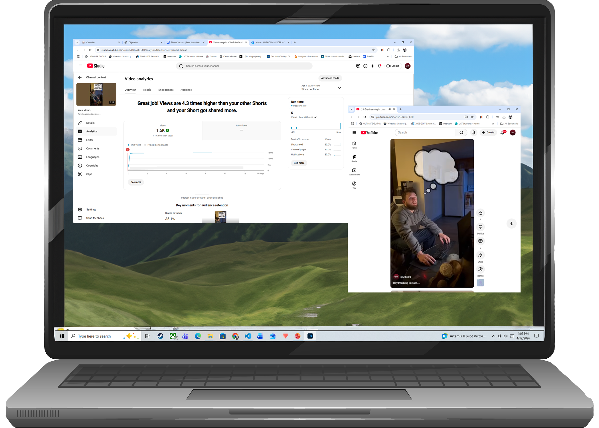
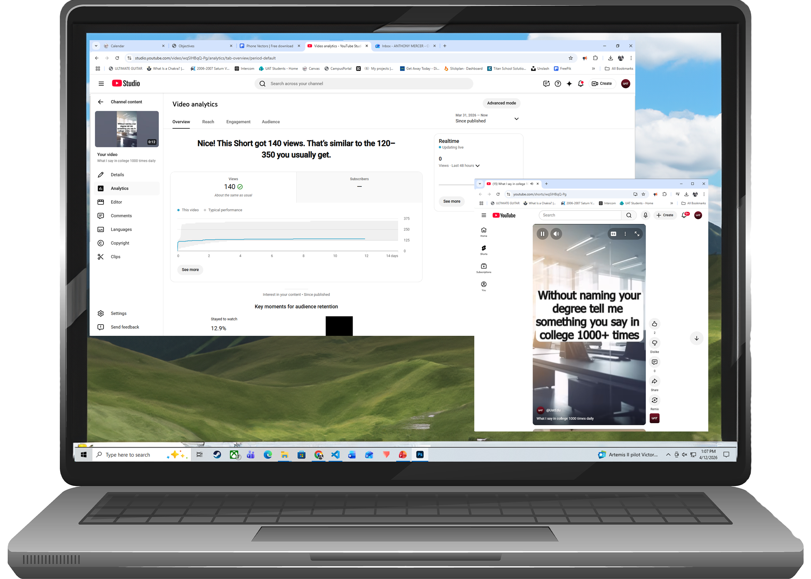
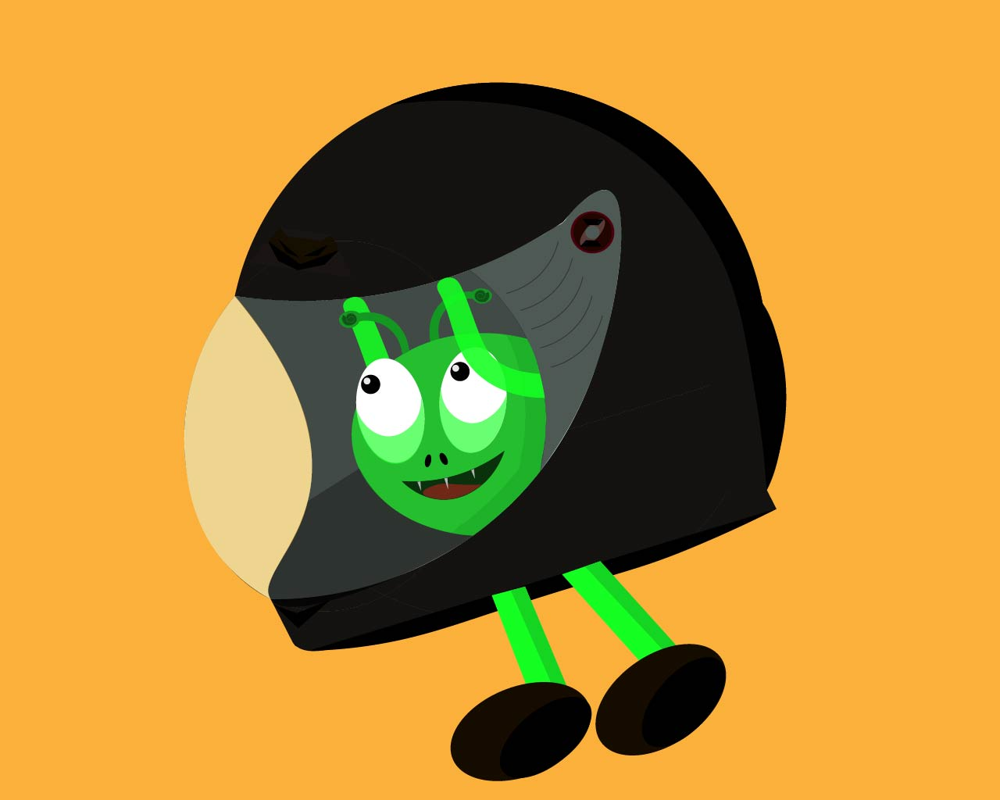

Home
About Me
Portfolio
SIP
Objectives
Contact
FAQ
The Future
Home
About Me
Portfolio
SIP
Objectives
Contact
FAQ
The Future
Home
About Me
Portfolio
SIP
Objectives
Contact
FAQ
The Future
Home
About Me
Portfolio
SIP
Objectives
Contact
FAQ
The Future
Understand inbound marketing and SEO strategies based on evolving trends in the market.

The video about Daydreaming in class was created in Premiere Pro and posted to the UAT Marketing Social media pages for my intership. It is a perfect implementation of using inbound marketing and SEO strategies to utilize evolving trends in the market. Through research of social media and trends that are occuring this video reached, over 3,000 veiws across 3 different platforms.
Click me for video!
The video about Saying "It says autosave 1000+ times" in college exemplifies the understanding of inbound marketing and SEO strategies with evolving trends by taking a trending video about what people are saying and I turned it into a video for UAT, our college.
Click me for video!
The video about Colorado weather changing is taking an online student's persective from out o state and showing how weather in Colorado can be everchanging! This video took I took a trending video and turned it into perspective from a student at UAT living in Colorado. All three of these videos show how I can take an evolving trend occuring through social media and turn it into a trending video for our college UAT!
Click me for video!Create content that fosters the growth and engagement of a targeted audience.

The poster of Elden Ring and why people should play it was created with Photshop and uses AI generator for some of the elements. This is aimed for engagement with the community of gamers that love to play Dark Souls games like Elden Ring and provide statistics as to why people love this game.

This is a poster created for the community of gamers that play Apex legend, a massive online mltiplayer game that you are able to choose your playable character and play with your friends. The poster fosters the growth of a community through a game that builds friendships and team work.

This movie poster is aimed to gain attention from the communiy of people who love the Lord of The Rings movies and always wanted an originl poster that exemplifies the first movie entirely.
Design and implement digital marketing strategies that follow branding guidelines.

Tech start up brand Cloud Tech was dirived from my Cloud brand aparrel and utlizes a different scheme to represent a tech company. I designed this as a mock-up for a stage company to showcase how I can design a brand and put together an entire showcase for that brands identity.

Food truck was created in Photoshop and utilizes color schemes and a logo brand created by me to showcase an entire companies rebrand. Even tough this company is a mock-creation, it shows how I can design and put together a presetation for a brand.

The energy brand mock-up is created through Photoshop to showcase my skills in Photoshop and how a brand identity can be created by me utilizing the skills I earned here at UAT.

Waffle Spot was a mockup of a restaraunt that shows the design and branding upgrades towards a mock-company. All of these examples show how I can use Digtial Marketing strategies to design that follow branding guidelines.
Identify basic KPIs (Key Performance Indicators) through analytics for conversion optimization.

My Colorado weather video shows how I can use the analytics tools on platforms where the video is posted to track basic KPIs. Features like views, watch time, and engagement allow me to see how audiences interact with the content. Tracking these metrics helps identify what performs well and can be used to improve content and optimize conversions.
Click me for video!
My video about daydreaming in class shows how I can use the analytics tools on the platforms where it is posted to track basic KPIs. By monitoring metrics like views, watch time, click-through rates, and audience engagement, I can see how viewers respond to the content. These insights help identify what attracts and keeps viewers’ attention, which can guide improvements that support conversion optimization.
Click me for video!

My video about what college students say 1000+ times in class demonstrates how I can use analytics tools on the platforms where the video is posted to track basic KPIs. By reviewing metrics such as views, watch time, click-through rates, and audience engagement, I can measure how viewers interact with the content across different devices. These platform insights help identify patterns in user behavior and can be used to improve content and support conversion optimization.
Click me for video!Cultivate leadership qualities through the development and management of marketing campaigns.

Through designing and developing a preview, Cloud Tech shows how it can be used throughout the brand's identity.

The Cloud Apparel brand shows how I can put together a marketing campaign for a brand to showcase what the brand is capable o showing.

The Wave is a colagne brand with mock-ups showing how the brand could be advertised and showcase their logo in ways to gain more traffic. All three of these brands I created marketing campaigns for and compiled a showcase for each one individually to show how I can use my leadership qualities earned through UAT and create these campaigns and showcase them properly for each brand.
Develop the ability to work with standard and emerging platforms used in the industry for digital advertising.

Underwater Composite is a variety of images complied into one photo, with this version I used about 7-10 photos and compiled them in Photoshop.

Animated Charater was a creation with shapes and line in Photoshop directly from thought and creation.

Vector Mask of a cat was created in Illustrator and creation of it was referenced from images of Egyptian cats and designs on their paintings.

Cartman was drawn only using the shapes tool in Illustrator. It was copy and pasted a few times with different elements to give it a sort of 3D effect.

VFX of a deer created with Illustrator.
@Mercer Design The links to all of my Socials are found below.